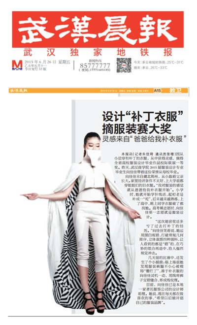
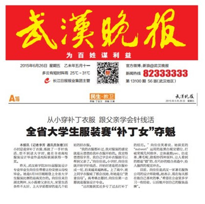
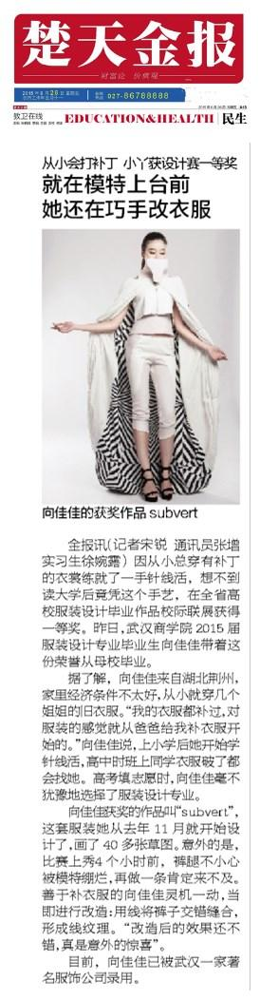

本网讯 25日,带着刚刚在2015年全省高校服装设计毕业作品校际联展一等奖的荣誉,校2015届服装设计专业毕业生向佳佳离开了母校。从小穿补丁衣服，练就了一手针线活。读大学后，在学校老师的培养下成了一名准服装设计师，并在本地一家著名服饰公司找到一份设计师助理的工作。26日的武汉晚报、武汉晨报、楚天金报等对她作了报道。
武汉晨报：
设计“补丁衣服”摘服装赛大奖
灵感来自“爸爸给我补衣服”
本报讯（记者朱佳琦通讯员张增）因从小总穿有补丁的衣服，从中获得灵感，摘得全省高校服装设计毕业作品校际联展一等奖。昨天，武汉商学院2015届服装设计专业毕业生向佳佳带着这份荣誉从母校毕业。
向佳佳来自湖北荆州，从小跟着父亲长大。家里经济条件不太好，上大学前都穿姐姐们的旧衣服。“我对服装的感觉就从爸爸给我补衣服开始”。小学时，她就开始学针线活，起初老是补成一“坨”，后来越来越熟练，上了高中，班上同学衣服破了都找她。高考填志愿时，向佳佳第一志愿就是服装设计。
“这次能获奖还多亏了过去打补丁的经历。”向佳佳笑着说，她运用黑白视错，打破常规几何排序，立体裁剪四种面料，让人看到的都是“错”的，在巧妙的组合再造中，给人强烈视觉冲击。
几天前的比赛中，还发生了个小插曲：临上场前她发现服装裤腿不小心被模特“绷烂了”，善于补衣服的向佳佳灵机一动，用线将裤子交错缝合，形成线纹理。
目前，向佳佳已是本地一家著名服饰公司的设计师助理。她说，现在每天都在做喜欢的事，“希望以后能开创自己的服装品牌”。
武汉晚报：
从小穿补丁衣服跟父亲学会针线活
全省大学生服装赛“补丁女”夺魁
本报讯（记者李芳通讯员张增）因小时总是穿补丁衣裳，练就了一手针线活，想不到读大学时，竟在全省高校服装设计毕业作品校际联展获得一等奖。
昨天，武汉商学院2015届服装设计专业毕业生向佳佳带着这份荣誉从母校毕业。她是6月18日刚刚登上全省大学生服装比赛的最高奖台的。向佳佳来自湖北荆州，从小跟着父亲长大，家里生活条件不太好，上大学前都穿的是几个姐姐的旧衣服。
“我的衣服都补过，我对服装的感觉就是从爸爸给我补衣服开始的。我觉得爸爸很辛苦，我自己学会补衣服就可以帮到父亲了。”向佳佳说。小学时，向佳佳就开始学针线活，开始时老是把衣服补成一坨，后来越来越熟练。上了高中，班上同学衣服破了都会找她，称她是位“贤妻良母”。高考填志愿时，向佳佳第一志愿就是服装设计专业。
“这次能获奖还多亏了过去打补丁的经历。”向佳佳笑着说，她获奖的“subvert”运用的是黑白视觉错位，打破常规几何排序，立体裁剪pvc、仿皮革、薄毛呢、欧根纱四种面料，让人看到的都是“错”的，在巧妙的组合再造中，给人强烈的视觉冲击。
目前，向佳佳是武汉一家著名服饰公司的设计师助理。她表示，现在每天都在做自己喜欢的事，“希望在企业里多学习一些经验，以后能开创自己的服装品牌”。
楚天金报：
从小会打补丁小丫获设计赛一等奖
就在模特上台前她还在巧手改衣服
金报讯（记者宋锐通讯员张增实习生徐婉露）因从小总穿有补丁的衣裳练就了一手针线活，想不到读大学后竟凭这个手艺，在全省高校服装设计毕业作品校际联展获得一等奖。昨日，武汉商学院2015届服装设计专业毕业生向佳佳带着这份荣誉从母校毕业。
据了解，向佳佳来自湖北荆州，家里经济条件不太好，从小就穿几个姐姐的旧衣服。“我的衣服都补过，对服装的感觉就从爸爸给我补衣服开始的。”向佳佳说，上小学后她开始学针线活，高中时班上同学衣服破了都会找她。高考填志愿时，向佳佳毫不犹豫地选择了服装设计专业。
向佳佳获奖的作品叫“subvert”，这套服装她从去年11月就开始设计了，画了40多张草图。意外的是，比赛上秀4个小时前，裤腿不小心被模特绷烂，再做一条肯定来不及。善于补衣服的向佳佳灵机一动，当即进行改造：用线将裤子交错缝合，形成线纹理。“改造后的效果还不错，真是意外的惊喜”。
目前，向佳佳已被武汉一家著名服饰公司录用。
荆楚网：
武汉商学院学子夺全省大学生服装设计校际联展一等奖
荆楚网消息（通讯员张增）打破常规几何的排列秩序，运用黑白两个最经典时尚的颜色，使用立体裁剪，和视觉效应相结合，让人觉得看到的都是“错的”。6月18日，凭借这种独特的黑白视错设计出的女装“subvert”，来自武汉商学院2012级服装设计专业的向佳佳，拿下了2015年湖北省大学生服装设计毕业作品校际联展上的一等奖。
“subvert”是向佳佳耗时半年的设计作品。要想达到预期的效果，材质是非常重要的。向佳佳介绍，她用了一个月的时间去精挑细选搜集材料，最终选定了欧根纱、仿皮革、pvc和薄毛呢。
pvc常用于制作雨衣，并不是常用的材料，向佳佳加以再造，却给观众带来了强烈的视觉冲击。“我自己把pvc材料剪成条状组合在一起，造出了立体的效果”向佳佳解释道。
“除此之外，向佳佳还自己用刀片把仿皮革做成镂空，做工细致也需许多耐心。据了解，向佳佳平时就是个刻苦用心的学生。“向佳佳每次都很认真地完成作业，甚至超额完成，是个特别刻苦的学生。”作为指导老师，余戡平老师对向佳佳非常满意。